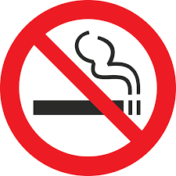
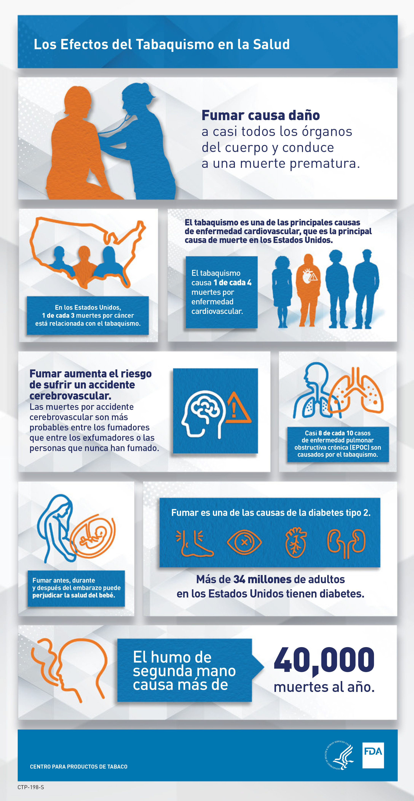

Vida Saludable
Inicio
Sobre Nosotros
Claro
Oscuro
El cigarrillo y la salud
¿Cuáles son algunos de los problemas de salud causados por fumar cigarrillos?


Desea dejarnos un comentario?
Ingrese su E-mail
Deje su comentario:
Recuerdame
Enviar